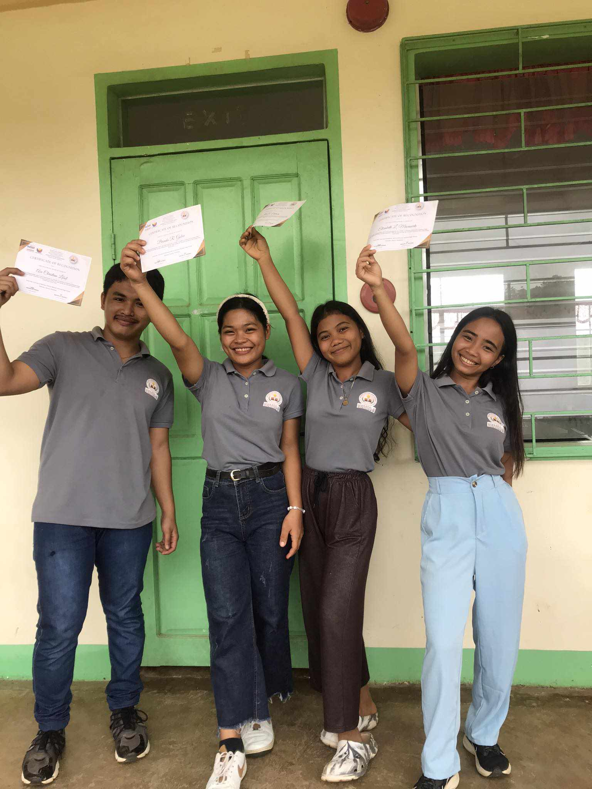
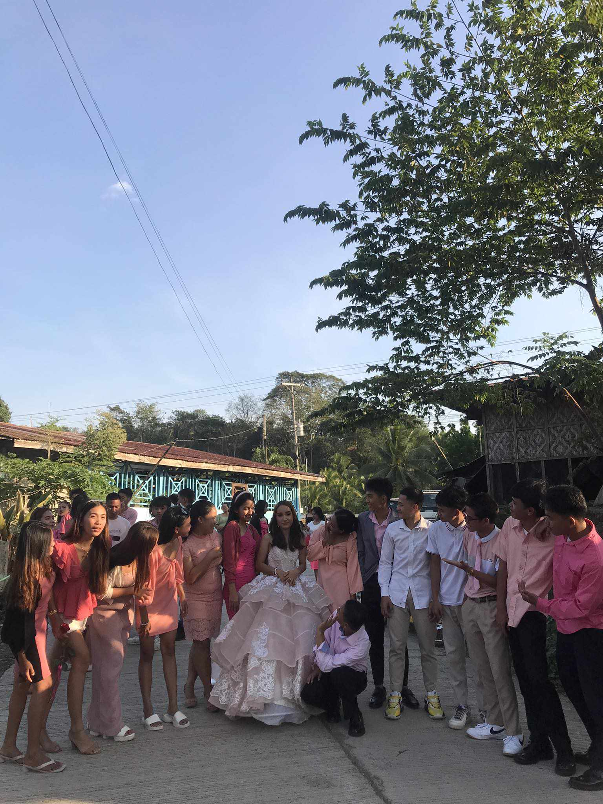
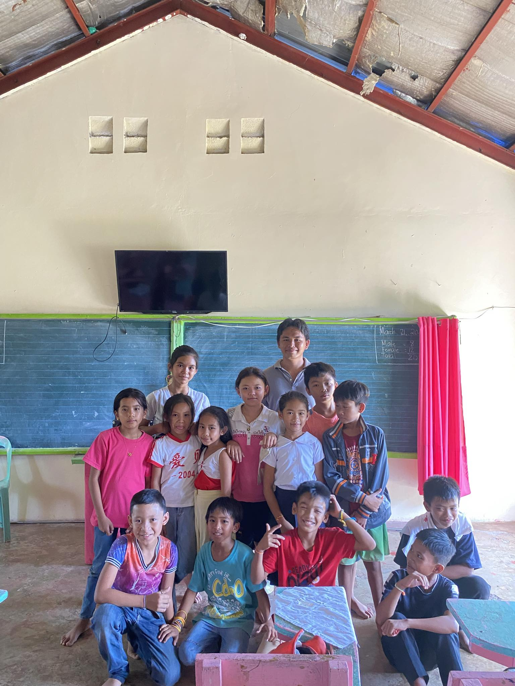
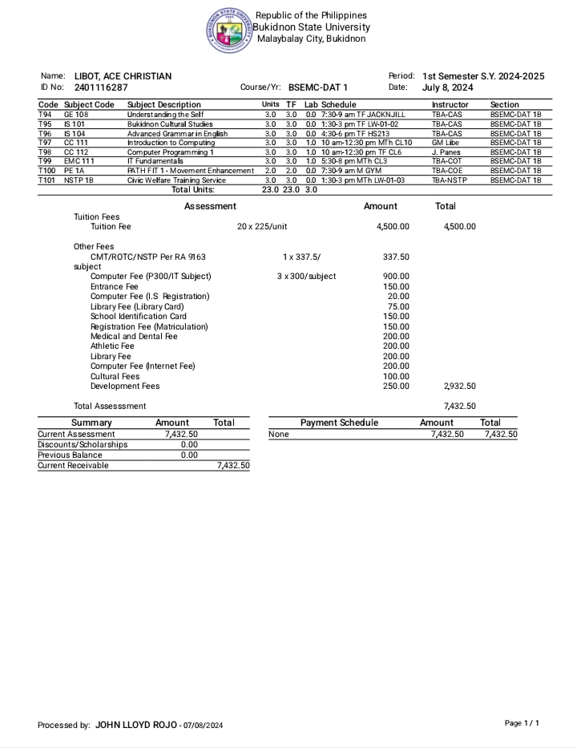
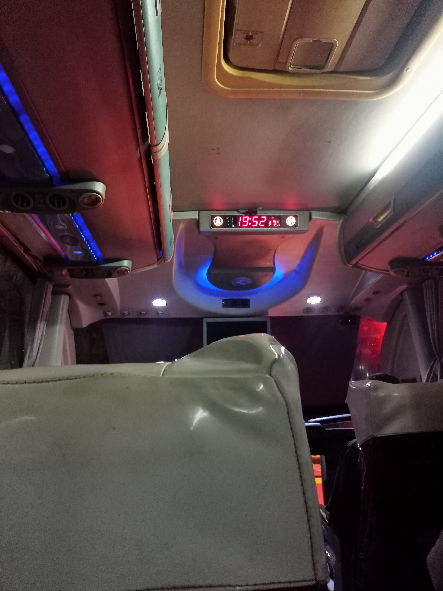

This is the most, if not the most, but one of the most important achievements that I have acquired in my life. Because being able to finish senior high school is a super great achievement since it isn't an easy journey, but through my effort and dedication, I finished it, and I made my family happy, which makes me happy because everything they do to me is slowly paid back.

I'm not gay but my best friend when i was grade 12 was all girl. I don't know why but maybe destiny pulled us together and yeah it was so good since they're all trust worthy, fun, and able to help me in any situation. Therefore, i'm so proud to have them in my life.

My grade 11-12 classmates is my second family, although we all have different circle of friends but if someone is really in trouble all of them give a hand because our goal isn't to race if who finish first but all of us must finish by not leaving someone behind. And i'm so lucky and proud of having them.

This is the time when i was doing a immersion in a school because it's one of the requirements of my subject and this time i felt so much nervous like i really don't know what to do since this is my first tike immersing myself to other school to assist teacher in their teaching of their student. And i overcome it and finished my immersion which makes me so proud.

This certification is my Report of Rating which contains my grade when i take the exam in BUKSU. Taking this exam is really hard and very pressure because the exam depends of my future. Therefore, being one of the passer makes myself very proud.

I considered this photo that i am proud of because that is my first time traveling on my own since all the time my parents is with me when i travel but that time i was all alone so it make me proud of myself that i managed to conquered it.